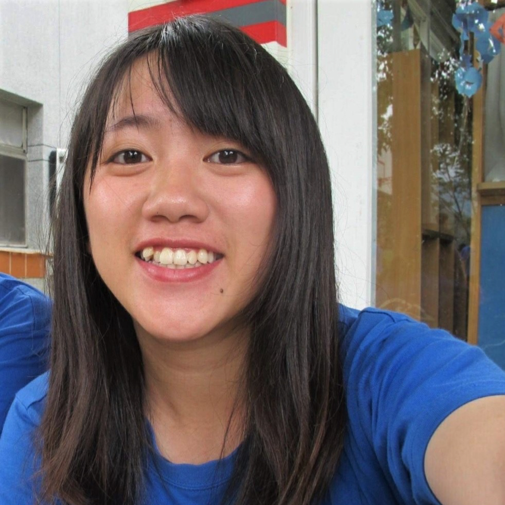

公司職員簡介
姓名 : 許筱婷
職稱 :2016假日營公隊股長、 2017養老、抬耀小隊長
入社年份 : 2015-2017
特殊表現 : 每天起床煮早餐、抬耀盃碰碰車及花式摔角項目衛冕者、19大隊歌cover 最後一段鬼叫、蔥抓餅抓抓高手、抬耀廚娘、屁孩孩子王、哦這個腿！ 頂定!
員工表現

鈁淩
謝謝筱婷當初跟舒啟宏信任我交給我課輔股長的職務，有時候想起來還是覺得有些抱歉因為時間分配和人手不足的關係後來停掉了竹東課輔，但是看到你真心為原文付出的精神真的很欽佩! 希望你之後也能順順利利 ! 畢業快樂 !
ㄐㄩ
筱婷屁孩，謝謝妳在養老跟我說了那麼多，有很多想法和思考都是你帶給我的， 雖然我還是很不爽妳拍門叫我們起床，但我還是很愛您❤️妳真的是一個很厲害的人，希望妳未來一樣厲害，但是不要再那麼小屁孩了知道ㄇ，還有年紀大就不要再飆車ㄌ，有空再一起回養老做鬆餅還有地瓜球
匿名
真的蠻慶幸因為抬耀而認識了你，雖然到了大三我們根本一年見一次吧，還記得我們那時上山會躺在床上邊睡邊聊心事，兩個傻瓜很久沒合體了呢，但不管是聊心事還是打打鬧鬧，我覺得你就是個屁孩跟媽媽的合體，有時候幼稚的要命，但有時又會跟媽媽一樣教我們很多事告訴我們很多部落小故事，不管怎樣，還是愛妳啦！畢業快樂！
鈞涵
來原文的原因你站了一小部分，雖然一開始選部落完被你訓斥一頓~~畢業快樂!愛你 約我們吃飯!
張瑋
妳是我兩個部落的小隊長，雖然時常敷衍妳、調侃妳，但其實還是十分尊敬妳啦！感謝妳從騎車上山、煮飯燒菜，到待人接物、深度思考，通通無微不至地耐心的指點。祝畢業後一樣平安快樂！減肥加油～
斈恩
筱婷媽媽我愛您，之後我一定會因為公演一直打擾你<3妳一直是我的榜樣(認真)，好希望能變成跟妳一樣厲害的人，而我相信妳以後不管做什麼都一定會很棒的，因為妳是許筱婷！愛妳，畢業快樂！好想再跟妳還有大家一起上養老喔><
可綠
想當初超級怕你的覺得你超兇超可怕,但後來可能是在山上露出真面目(惱人妹妹模式),你的威嚴形象就徹底崩壞,對你的感謝真的說不完,謝謝你給迷茫的我很多建議,每次問你問題看到你不厭其煩的回好長一串就覺得感動到想哭,你是一個讓人感到安心的存在!最喜歡跟你聊天了(雖然有很大一部分是幹話哈哈)!不管是戀愛還是正經事,都會讓我很放鬆的對你說出來,愛死你了<3筱婷畢業快樂!!
依潔
謝謝筱婷媽媽在山上的照顧，最喜歡聽你在山上講很多事情很溫柔的讓我們了解養老，還有系排的時候很耐心的教我陪我一起對墊，還有剛開始我加入原文手足無措的時候謝謝你陪著我慢慢長大學會做事還有用不同的角度看事情，很喜歡聽你講很多事情，我記得你最喜歡我在養老如何處理馬桶不通的事件，你可以留著心情不好的時候回想保證可以逗樂你，畢業快樂唷阿婷，希望你未來一切安好。
張宸寧
許筱婷掰掰畢業快樂祝你變瘦開開心心
源芳
親愛的許筱婷~~~你真的是一個完全零距離的學姊耶XD還好我當初因為太愛小孩而加了抬耀才和你跟魏孜變那麼好!好喜歡聽你講各種故事和想法，跟你一起聊天睡覺農忙玩耍夜唱夜衝blablabla，跟你在一起做任何事真的都好開心!然後看你煮飯照顧小孩的慈母模樣自己都跟著幸福起來~~總之總之好幸運能在原文認識你，超愛你的!畢業後兩個傻瓜還是要約哦~~畢業快樂拉!